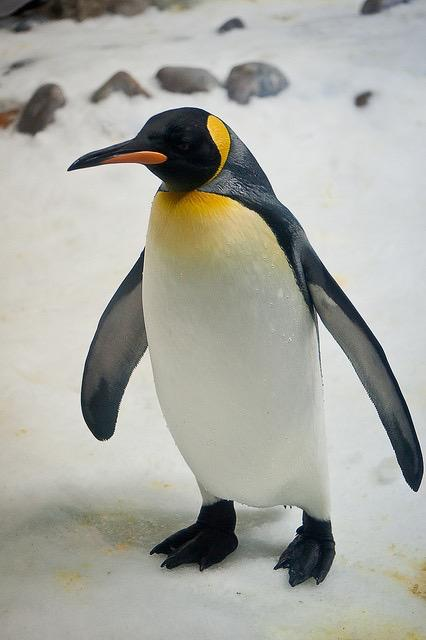
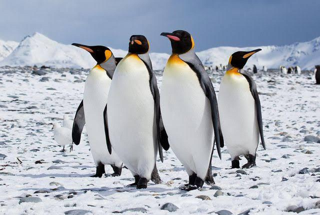

Penguins are a group of flightless aquatic birds that live almost exclusively in the Southern Hemisphere.
They are highly adapted for life in the water, with wings that have evolved into flippers for swimming and a
streamlined body shape. Penguins are known for their distinctive black and white plumage, which serves as camouflage in the ocean, and their waddling gait on land.

Habitat 🌏
Penguins are found in a variety of climates, from icy Antarctica to temperate
islands and even warm equatorial regions like the Galápagos. Most penguins live
in coastal regions where they can easily access the ocean for food.
Species
There are 18 known species of penguins, each adapted to different environments.
Some well-known species include:
Emperor Penguin -he largest species, known for its iconic breeding colonies in Antarctica.
King Penguin - second largest, Known for its vibrant orange neck
Adelie - small black and white penguins native
Little Blue Penguin - the smallest species found in
Macaroni Penguin: Known for its distinctive yellow crest feathers.
Gentoo Penguin - Characterized by a broad white stripe extending like a bonnet across the top of its head.
Swimming and Movement 🏊
🏊♂️ Swimming and Movement
Penguins are expert swimmers, using their flipper-like wings to glide through water with speed and grace.
Some species can dive over 500 meters deep and stay underwater for more than 20 minutes.
On land, penguins waddle, hop, or slide on their bellies across the ice. Though they cannot
fly in the air, they are often called “flying birds of the sea” due to their fast, agile swimming.

diet 🍽
Penguins are carnivores
Fish
Squid
Krill
Others small sea animals
They catch their prey while swimming and have special adaptations like sharp beaks and excellent
Breeding & Family Life 🐣
Penguins are known for their strong family bonds and shared parenting. Most penguin species mate for life.
They usually lay one or two eggs, and both parents take turns keeping the eggs warm and feeding the chicks after they hatch.
For example, the Emperor Penguin male balances the egg on his feet under a pouch for about 2 months during the coldest part of winter, without eating.
Anatomy and Adaptations
Penguins have several unique anatomical features that allow them to thrive in their harsh environments:
Flippers: Their wings are rigid and flattened into flippers, which they use to "fly" through the water at high speeds.
Dense Bones: Unlike most birds, penguins have solid, dense bones that act as ballast, helping them to stay submerged.
Streamlined Body: Their torpedo-shaped bodies reduce drag, allowing for efficient swimming.
Salt Gland: Penguins have a supraorbital gland above their eyes that filters excess salt from their bloodstream, allowing them to drink seawater.
Feathers: They have a dense layer of short, stiff, overlapping feathers that are waterproof and provide insulation.
Countershading: Their black back and white belly (countershading) is a form of camouflage. From above, the black blends with the dark ocean depths, and from below, the white blends with the bright surface.
Predators and Threats
Penguins face a number of threats, both natural and human-related:
Natural Predators: On land, their eggs and chicks are vulnerable to predators like skuas and giant petrels. In the water, adult penguins are
preyed upon by leopard seals, fur seals, and orcas.
Climate Change: A major threat is climate change, which affects their food sources (e.g., krill are highly sensitive to changes in sea ice) and their breeding habitats.
Human Activities: Other threats include oil spills, entanglement in fishing nets, and habitat destruction.
Unique Behaviors and Interesting Facts
Porpoising: Penguins leap out of the water while swimming, a behavior called "porpoising," which helps them breathe and confuses predators.
Waddling: Their unique waddling gait on land is a result of their legs being positioned far back on their bodies, which is an adaptation for efficient swimming.
Tobogganing: They often slide on their bellies across the ice and snow, a method of travel known as "tobogganing," which is faster than walking.
Deep Divers: Emperor Penguins can dive to depths of over 500 meters and hold their breath for more than 20 minutes.
Conclusion 📌
Penguins are beautiful, intelligent, and playful animals that play an important role in the ocean ecosystem. They are admired around the world for their appearance,
behavior, and ability to survive some of the harshest conditions on Earth.Let's all do our part to protect these amazing birds and the planet they call home.